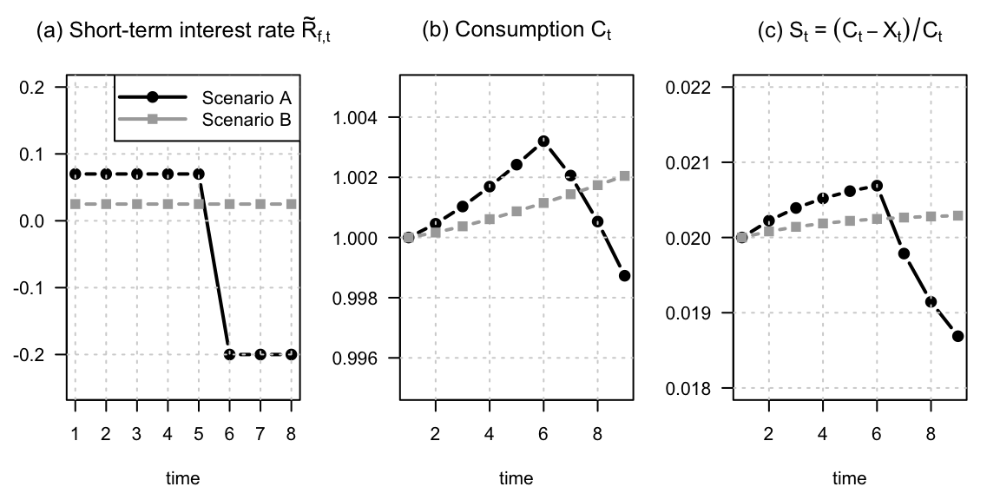
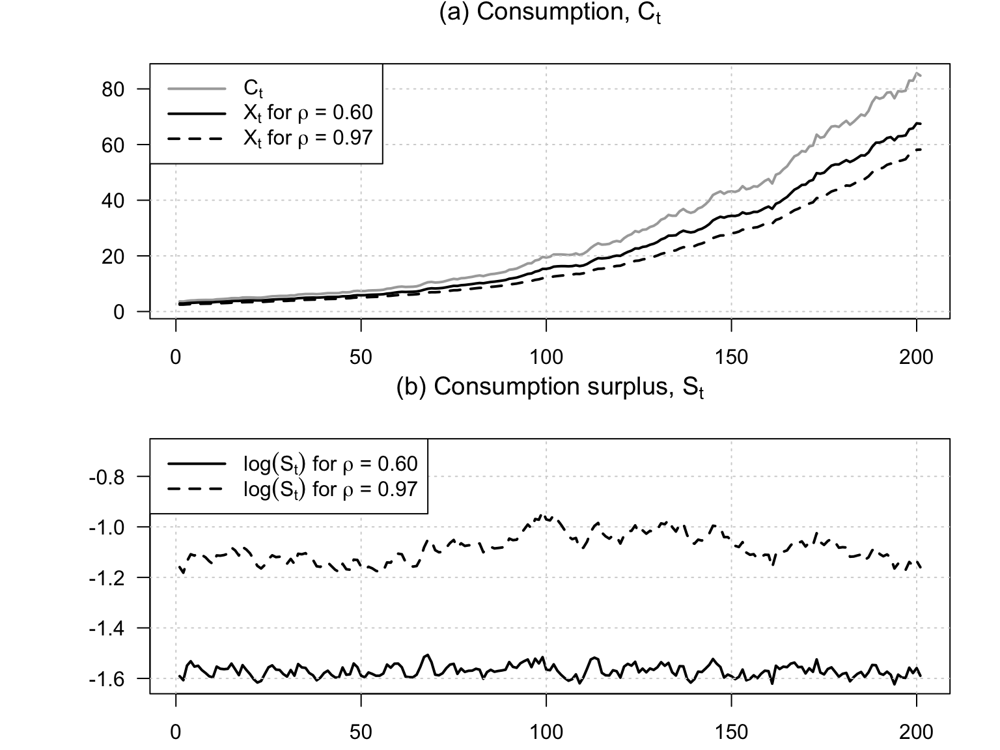
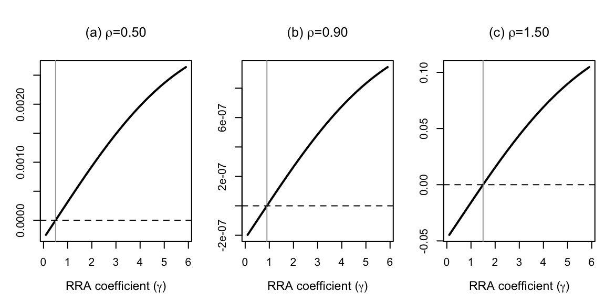
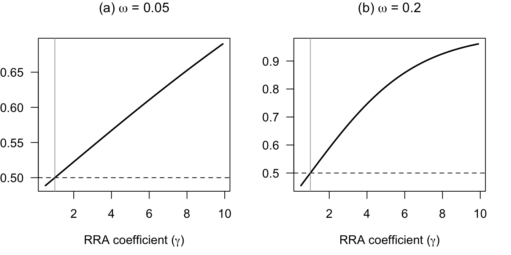
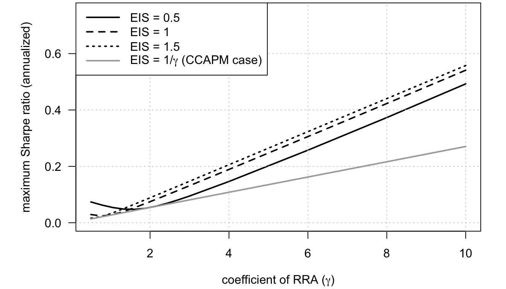
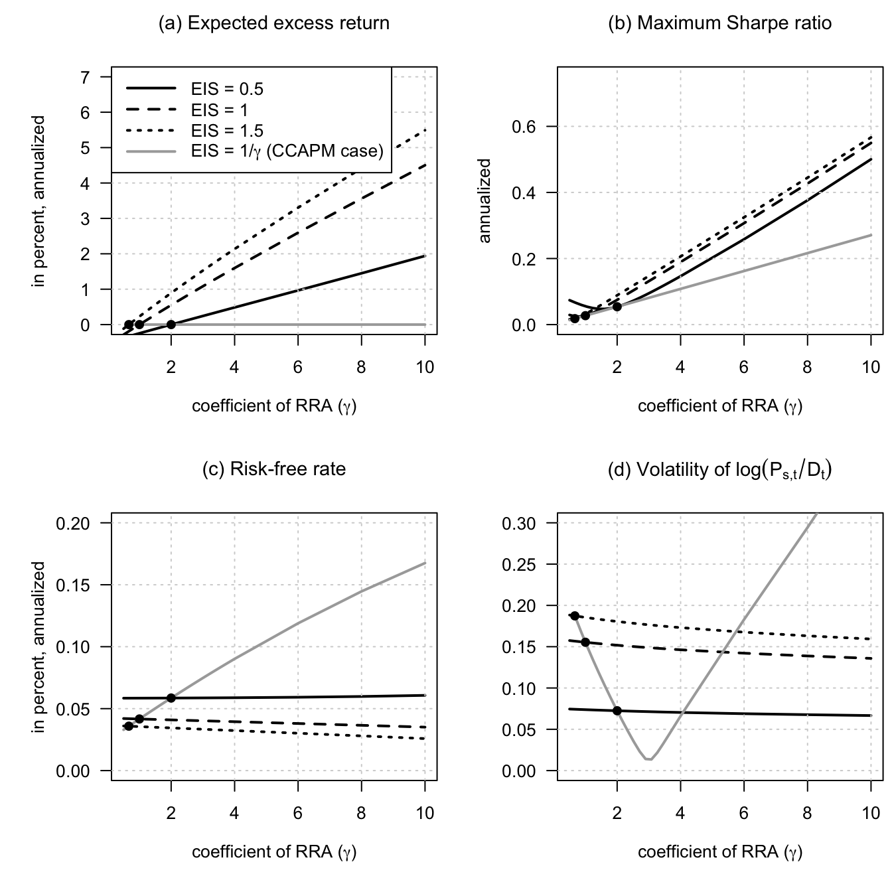
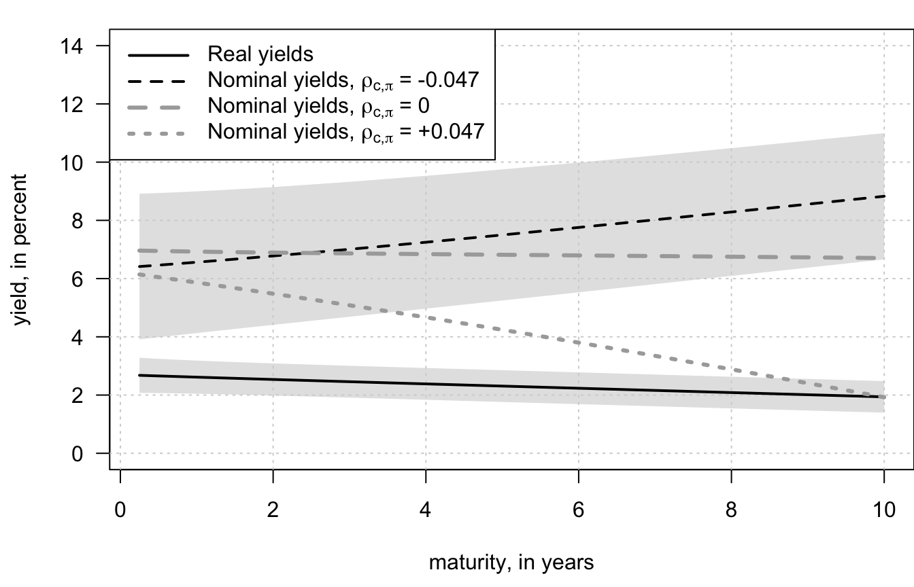

Chapter 12 Recursive preferences
12.1 External habits amplify variation in marginal utility
This example illustrates how external habits amplify variation in marginal utility.
# Purpose: This example illustrates how external habits amplify variation in marginal utility
# Set the habit-preference parameters.
delta <- 1
lambda <- .49
rho <- .5
gamma <- 3
r.f <- c(rep(0.07,5),c(-.2,-.2,-.2))
# Simulate scenario A.
T <- length(r.f)
C <- 1
C.t <- C
X <- lambda * C /(1-rho)
X.t <- X
U <- delta * (C.t - X.t)^(1 - gamma)/(1 - gamma)
U.no.habit <- delta * (C.t)^(1 - gamma)/(1 - gamma)
for(t in 1:(T)){
C.t <- (1/(1+r.f[t]))^(-1/gamma) * (C.t - X.t) + rho * X.t + lambda * C.t
C <- c(C,C.t)
X.t <- rho * X.t + lambda * C.t
X <- c(X,X.t)
U <- U + delta * (C.t - X.t)^(1 - gamma)/(1 - gamma)
U.no.habit <- U.no.habit + delta * (C.t)^(1 - gamma)/(1 - gamma)
}
U1 <- U
U1.no.habit <- U.no.habit
C1 <- C
X1 <- X
R.f.1 <- r.f
# Simulate scenario B.
r.f <- c(rep(0.025,8))
T <- length(r.f)
C <- 1
C.t <- C
X <- lambda * C /(1-rho)
X.t <- X
U <- delta * (C.t - X.t)^(1 - gamma)/(1 - gamma)
U.no.habit <- delta * (C.t)^(1 - gamma)/(1 - gamma)
for(t in 1:(T)){
C.t <- (1/(1+r.f[t]))^(-1/gamma) * (C.t - X.t) + rho * X.t + lambda * C.t
C <- c(C,C.t)
X.t <- rho * X.t + lambda * C.t
X <- c(X,X.t)
U <- U + delta * (C.t - X.t)^(1 - gamma)/(1 - gamma)
U.no.habit <- U.no.habit + delta * (C.t)^(1 - gamma)/(1 - gamma)
}
U2 <- U
U2.no.habit <- U.no.habit
C2 <- C
X2 <- X
R.f.2 <- r.f
# Plot interest rates, consumption, and surplus consumption.
par(mfrow=c(1,3))
par(plt=c(.2,.9,.2,.85))
plot(R.f.1,col="black",lwd=2,pch=19,ylim=c(-.25,.2),las=1,
main=expression(paste("(a) Short-term interest rate ",
tilde(R)[f*","*t], sep = "")),
xlab="time",ylab="",type="b")
grid()
lines(R.f.2,col="darkgrey",pch=15,cex=1.2,type="b",lwd=2)
legend("topright",
c("Scenario A","Scenario B"),
lty=c(1,1),
lwd=c(2,2),
pch=c(19,15),
pt.cex=c(1,1.2),
col=c("black","darkgrey"),
seg.len = 4
)
plot(C1,col="black",lwd=2,pch=19,ylim=c(.995,1.005),las=1,
main=expression(paste("(b) Consumption ",C[t],sep="")),xlab="time",ylab="",
type="b")
grid()
lines(C2,col="darkgrey",pch=15,cex=1.2,lwd=2,type="b")
plot((C1-X1)/C1,col="black",lwd=2,pch=19,ylim=c(0.018,0.022),las=1,
main=expression(paste("(c) ",S[t]," = ",(C[t]-X[t])/C[t],sep="")),xlab="time",ylab="",type="b")
grid()
lines((C2-X2)/C2,col="darkgrey",pch=15,cex=1.2,lwd=2,type="b")
12.2 Exponentially smoothed consumption growth enters recursive preferences
This example shows how exponentially smoothed consumption growth enters recursive preferences.
# Purpose: This example shows how exponentially smoothed consumption growth enters recursive
# preferences
# Simulate a consumption-growth path.
mu <- .015
sigma <- .02
nb_sim <- 300
p <- .00
sigma_crisis <- .0
eta_crisis <- .1
dc <- mu + sigma * rnorm(nb_sim) +
(runif(nb_sim)<p)*(- eta_crisis + sigma_crisis*rnorm(nb_sim))
c <- cumsum(dc)
C <- exp(c)
# Specify surplus-consumption smoothing parameters.
all_rho <- c(.6,.97)
all_alpha <- c(1,1)
all_alpha_tilde <- c(.2,.2)
start.date <- 100
end.date <- nb_sim
par(mfrow=c(2,1))
par(plt=c(.15,.95,.15,.83))
plot(C[start.date:end.date],type="l",lwd=2,
ylim=c(1 - max(all_alpha_tilde),max(C)),
main=expression(paste("(a) Consumption, ",C[t],sep="")),
las=1,xlab="time",ylab="",col="darkgrey")
grid()
# Construct habit-adjusted consumption for each smoothing parameter.
all_S <- NULL
for(i in 1:length(all_rho)){
lambda_t <- mu
lambda <- lambda_t
for(t in 2:nb_sim){
lambda_t <- all_rho[i] * lambda_t + (1 - all_rho[i]) * c[t-1]
lambda <- c(lambda,lambda_t)
}
S <- all_alpha_tilde[i] * exp(all_alpha[i] * (c - lambda))
all_S <- cbind(all_S,S)
X <- C * (1 - S)
lines(X[start.date:end.date],lwd=2,lty=i)
}
legend("topleft",
c(expression(C[t]),
expression(paste(X[t]," for ",rho," = 0.60",sep="")),
expression(paste(X[t]," for ",rho," = 0.97",sep=""))),
lty=c(1,1:length(all_rho)),
lwd=2, # line width
col=c("darkgrey",rep("black",length(all_rho))),
seg.len = 3
)
# Plot the surplus-consumption ratio.
plot(log(all_S[start.date:end.date,1]),type="l",lwd=2,
main=expression(paste("(b) Consumption surplus, ",S[t],sep="")),
las=1,xlab="time",ylab="",ylim=c(min(log(all_S[start.date:end.date,])),
.25+max(log(all_S[start.date:end.date,]))))
grid()
lines(log(all_S[start.date:end.date,2]),lwd=2,lty=2)
legend("topleft",
c(expression(paste(log(S[t])," for ",rho," = 0.60",sep="")),
expression(paste(log(S[t])," for ",rho," = 0.97",sep=""))),
lty=c(1:length(all_rho)),
lwd=2, # line width
col=c(rep("black",length(all_rho))),
seg.len = 3
)
# Compute state-space objects associated with the smoothing specification.
for(i in 1:length(all_rho)){
rho <- all_rho[i]
alpha <- all_alpha[i]
Phi <- matrix(c(0,1-rho,0,rho),2,2)
Sigma <- matrix(c(sigma,0),2,1)
V <- matrix(solve(diag(4)-Phi %x% Phi)%*%c(Sigma%*%t(Sigma)),2,2)
vec_gamma_dc <- matrix(c(-gamma,0),2,1)
vec_gamma_dc_dlambda <- matrix(c(-gamma*(1+alpha),gamma*alpha),2,1)
}12.3 The fixed-point resolution behind Epstein-Zin preferences
This example illustrates the fixed-point resolution behind Epstein-Zin preferences.
# Purpose: This example illustrates the fixed-point resolution behind Epstein-Zin preferences
# Compare the fixed-point implication across elasticity parameters.
par(mfrow=c(1,3))
par(plt=c(.2,.95,.2,.8))
for(rho in c(.5,.9,1.5)){
all.gamma.values <- seq(.1001,6,by=.1)
all.C.minus.D.values <- NULL
# Compute the utility difference over risk-aversion values.
for(gamma in all.gamma.values){
c.h <- 1.2
c.l <- .8
beta <- .5
U.2.h <- (1 - beta)^(1/(1-rho)) * c.h
U.2.l <- (1 - beta)^(1/(1-rho)) * c.l
U.1.C.hh <- ((1-beta)*c.h^(1-rho) + beta * U.2.h^(1-rho))^(1/(1-rho))
U.1.C.hl <- ((1-beta)*c.h^(1-rho) + beta * U.2.l^(1-rho))^(1/(1-rho))
U.1.C.lh <- ((1-beta)*c.l^(1-rho) + beta * U.2.h^(1-rho))^(1/(1-rho))
U.1.C.ll <- ((1-beta)*c.l^(1-rho) + beta * U.2.l^(1-rho))^(1/(1-rho))
U.0.C <- (1 - beta)^(1/(1-rho)) * (.25 * U.1.C.hh^(1-gamma) +.25 * U.1.C.hl^(1-gamma) +
.25 * U.1.C.lh^(1-gamma) +.25 * U.1.C.ll^(1-gamma)
)^(1/(1-gamma))
E.U2gamma <- .5 * U.2.h^(1 - gamma) + .5 * U.2.l^(1 - gamma)
U.1.D.h <- ((1-beta)*c.h^(1-rho) + beta * E.U2gamma^((1-rho)/(1-gamma)))^(1/(1-rho))
U.1.D.l <- ((1-beta)*c.l^(1-rho) + beta * E.U2gamma^((1-rho)/(1-gamma)))^(1/(1-rho))
U.0.D <- (1 - beta)^(1/(1-rho)) * (.5 * U.1.D.h^(1-gamma) +.5 * U.1.D.l^(1-gamma))^(1/(1-gamma))
all.C.minus.D.values <- c(all.C.minus.D.values,U.0.C-U.0.D)
}
# Plot each panel for one value of rho.
if(rho==.5){
plot(all.gamma.values,all.C.minus.D.values,type="l",lwd=2,las=0,
xlab=expression(paste("RRA coefficient (",gamma,")",sep="")),ylab="",
main=expression(paste("(a) ",rho,"=0.50",sep="")),cex.lab=1.1
)
}
if(rho==.9){
plot(all.gamma.values,all.C.minus.D.values,type="l",lwd=2,las=0,
xlab=expression(paste("RRA coefficient (",gamma,")",sep="")),ylab="",
main=expression(paste("(b) ",rho,"=0.90",sep="")),cex.lab=1.1
)
}
if(rho==1.5){
plot(all.gamma.values,all.C.minus.D.values,type="l",lwd=2,las=0,
xlab=expression(paste("RRA coefficient (",gamma,")",sep="")),ylab="",
main=expression(paste("(c) ",rho,"=1.50",sep="")),cex.lab=1.1
)
}
abline(v=rho,col="darkgrey")
abline(h=0,col="black",lty=2)
}
12.4 Epstein-Zin pricing implications vary with preference parameters
This example shows how Epstein-Zin pricing implications vary with preference parameters.
# Purpose: This example shows how Epstein-Zin pricing implications vary with preference
# parameters
beta <- .9
gamma <- seq(0.5001,10,by=.1)
par(mfrow=c(1,2))
par(plt=c(.15,.9,.25,.85))
omega <- .05
E.m.0 <- - log(0.5 * exp(beta*(1-gamma)*omega) + 0.5 * exp(-beta*(1-gamma)*omega))
P <- .5 * exp(E.m.0 - beta*(1-gamma)*omega)
P.check <- .5 * exp(E.m.0 + beta*(1-gamma)*omega) +
.5 * exp(E.m.0 - beta*(1-gamma)*omega)
# Should be equal to 1.
plot(gamma,P,type="l",lwd=2,cex.main=1.1,las=1,
xlab=expression(paste("RRA coefficient (",gamma,")",sep="")),ylab="",
main=expression(paste("(a) ",omega," = 0.05",sep="")))
abline(v=1,col="darkgrey")
abline(h=0.5,col="black",lty=2)
omega <- .2
E.m.0 <- - log(0.5 * exp(beta*(1-gamma)*omega) + 0.5 * exp(-beta*(1-gamma)*omega))
P <- .5 * exp(E.m.0 - beta*(1-gamma)*omega)
P.check <- .5 * exp(E.m.0 + beta*(1-gamma)*omega) +
.5 * exp(E.m.0 - beta*(1-gamma)*omega)
# Should be equal to 1.
plot(gamma,P,type="l",lwd=2,cex.main=1.1,las=1,
xlab=expression(paste("RRA coefficient (",gamma,")",sep="")),ylab="",
main=expression(paste("(b) ",omega," = 0.2",sep="")))
abline(v=1,col="darkgrey")
abline(h=0.5,col="black",lty=2)
The following code produces a figure that shows the maximum Sharpe ratios that can be achieved with affine Epstein-Zin models.
12.5 The Bansal-Yaron long-run-risk environment and its state variables
This example introduces the Bansal-Yaron long-run-risk environment and its state variables.
# Purpose: This example introduces the Bansal-Yaron long-run-risk environment and its state
# variables
library(DTAM)
# ------------------------------------------------------------------------------
# Bansal and Yaron (2004): Homoskedastic case
# (using psi_GaussianVAR() for Laplace transform)
# ------------------------------------------------------------------------------
# Parameterization from Bansal and Yaron (2004):
EIS <- 1.5
gamma <- 10
delta <- .998
mu <- .0015
mu_d <- .0015
phi <- .979
beta <- 3
sigma <- 0.0078
varphi_e <- .044
varphi_d <- 4.5
model <- list(
mu = matrix(c(0,mu,mu_d),3,1),
Phi = matrix(c(phi,1,beta,rep(0,6)),3,3),
Sigma = diag(sigma^2*c(varphi_e,1,varphi_d)^2),
rho = 1/EIS,
phi = phi,
gamma = gamma,
delta = delta,
sigma = sigma,
mu_c0 = 0,
mu_c1 = c(0,1,0),
n_w = 3
)
model_solved <- solve_EZ_SDF(model,psi_GaussianVAR,z_bar_ini=5,
nb_loop_z_bar = 20,nb_loop_mu_z1 = 20)
# Check formula (compare with analytical BY formula):
A1 <- (1 - 1/EIS)/(1 - model_solved$kappa1*model$phi)
all_EIS <- c(.5,.9999,1.5,NaN)
all_col <- c("black","black","black","darkgrey")
all_lty <- c(1,2,3,1)
all_gamma <- c(seq(.50001,3,length.out=10),4,6,8,10)
all_maxSR <- matrix(0,length(all_EIS),length(all_gamma))
count_EIS <- 0
for(EIS in all_EIS){
count_EIS <- count_EIS + 1
count_gamma <- 0
model$rho <- 1/EIS
for(gamma in all_gamma){
count_gamma <- count_gamma + 1
model$gamma <- gamma
if(is.na(EIS)){
model$rho <- model$gamma
}
res <- solve_EZ_SDF(model,psi_GaussianVAR,z_bar_ini=5,
nb_loop_z_bar = 20,nb_loop_mu_z1 = 20)
psi_w_2alpha <- psi_GaussianVAR(2*res$alpha,model)
psi_w_alpha <- psi_GaussianVAR(res$alpha,model)
w <- res$Ew
maxSR <- sqrt(exp(t(psi_w_2alpha$a - 2*psi_w_alpha$a)%*%w+
psi_w_2alpha$b - 2*psi_w_alpha$b)-1)
all_maxSR[count_EIS,count_gamma] <- maxSR*sqrt(12)
}
}
par(plt=c(.15,.95,.2,.99))
plot(all_gamma,(all_maxSR[1,]),ylim=c(0,.75),type="l",
lwd=2,las=1,col=all_col[1],lty=all_lty[1],
xlab=expression(paste("coefficient of RRA (",gamma,")",sep="")),
ylab="maximum Sharpe ratio (annualized)")
grid()
for(i in 2:length(all_EIS)){
lines(all_gamma,(all_maxSR[i,]),lwd=2,
col=all_col[i],lty=all_lty[i])
}
legend("topleft",
c(expression(paste("EIS = 0.5",sep="")),
expression(paste("EIS = 1",sep="")),
expression(paste("EIS = 1.5",sep="")),
expression(paste("EIS = 1/",gamma," (CCAPM case)",sep=""))),
lwd=2,
lty=all_lty,
col=all_col,
seg.len = 3
)
Bansal and Yaron (2004) as a special case of Bansal and Shaliastovich (2012):
12.6 Yields, returns, and premia in the Bansal-Yaron model
This example studies yields, returns, and premia in the Bansal-Yaron model.
# Purpose: This example studies yields, returns, and premia in the Bansal-Yaron model
library(DTAM)
# Parameterization from Bansal and Yaron (2004):
EIS <- 1.5
gamma <- 10
delta <- .998
mu <- .0015
mu_d <- .0015
phi <- .979
beta <- 3
sigma <- 0.0078
varphi_e <- .044
varphi_d <- 4.5
nu1 <- .987
sigma_w <- .23*10^(-5)
# sigma_w <- 0
freq <- 12 # monthly frequency
# Definition of theta, using Bansal and Yaron notations:
theta <- (1 - gamma)/(1 - 1/EIS)
Phi <- matrix(0,3,3)
Phi[1,1] <- phi
Phi[2,1] <- 1
Phi[3,1] <- beta
model <- list(
mu_c0 = mu,
mu_c1 = matrix(c(0,1,0, # x weightings (x,x_1,eta,u)
0), # z weightings (sigma_t)
ncol=1),
mu_d0 = mu,
mu_d1 = matrix(c(0,0,1, # x weightings (x,x_1,eta,u)
0), # z weightings (sigma_t)
ncol=1),
Pi = Phi,
# unconditional means of x's conditional variances:
chi.0 = c(varphi_e^2*sigma^2,sigma^2,varphi_d^2*sigma^2),
# loadings of x's conditional variances on z:
chi.1 = matrix(c(varphi_e^2,1,varphi_d^2),nrow=1),
nu = as.matrix(nu1),
sigma.w = c(sigma_w),
gamma = gamma,
rho = 1/EIS,
delta = delta,
n_w = 3+1)
model_solved <- solve_EZ_SDF(model,psi_BansalShaliastovich,z_bar_ini=5,
nb_loop_z_bar = 10,nb_loop_mu_z1 = 400)
# Check with formulas reported in Bansal and Yaron:
# A1 <- (1 - 1/EIS)/(1 - model_solved$kappa1*phi)
# A2 <- .5*((theta - theta/EIS)^2 + (theta*model_solved$mu_z1[1]*model_solved$kappa1*varphi_e)^2)/
# (theta*(1 - model_solved$kappa1*nu1))
# model_solved$mu_z1
# c(A1,A2)
all_EIS <- c(.5,.9999,1.5,NaN)
all_col <- c("black","black","black","darkgrey")
all_lty <- c(1,2,3,1)
all_gamma <- c(seq(.50001,4,length.out=20),6,8,10)
# all_gamma <- seq(.80001,4,length.out=40)
all_maxSR <- matrix(0,length(all_EIS),length(all_gamma))
all_Erf <- matrix(0,length(all_EIS),length(all_gamma))
all_Ers <- matrix(0,length(all_EIS),length(all_gamma))
all_std_dev_pd <- matrix(0,length(all_EIS),length(all_gamma))
count_EIS <- 0
for(EIS in all_EIS){
count_EIS <- count_EIS + 1
count_gamma <- 0
model$rho <- 1/EIS
for(gamma in all_gamma){
count_gamma <- count_gamma + 1
model$gamma <- gamma
if(is.na(EIS)){
model$rho <- model$gamma
}
model_solved <- solve_EZ_SDF(model,psi_BansalShaliastovich,
z_bar_ini=5,
nb_loop_z_bar = 10,nb_loop_mu_z1 = 200)
# Compute maximum Sharpe ratio:
psi_w_2alpha <- psi_BansalShaliastovich(2*model_solved$alpha,model_solved)
psi_w_alpha <- psi_BansalShaliastovich(model_solved$alpha,model_solved)
Ew <- model_solved$Ew
maxSR <- sqrt(exp(t(psi_w_2alpha$a - 2*psi_w_alpha$a)%*%Ew+
psi_w_2alpha$b - 2*psi_w_alpha$b)-1)
all_maxSR[count_EIS,count_gamma] <- maxSR*sqrt(freq)
# Compute average risk-free rate:
Erf <- model_solved$eta0 + t(model_solved$eta1)%*%Ew
all_Erf[count_EIS,count_gamma] <- freq*Erf
# Solve for stock prices:
model_solved <- solve_EZ_stock_return(model_solved,psi_BansalShaliastovich,
nb_loop_z_bar = 10,nb_loop_mu_z1 = 200)
# Compute expected excess return:
psi_mu_rs2 <- psi_BansalShaliastovich(model_solved$mu_rs2,
model_solved)
Ers <- model_solved$mu_rs0 + t(model_solved$mu_rs1)%*%Ew +
psi_mu_rs2$b + t(psi_mu_rs2$a) %*%Ew
all_Ers[count_EIS,count_gamma] <- freq*Ers
# Compute variance of p-d:
Var_pd <- t(model_solved$mu_s1) %*% model_solved$Vw %*% model_solved$mu_s1
all_std_dev_pd[count_EIS,count_gamma] <- sqrt(Var_pd)
}
}
par(mfrow=c(2,2))
par(plt=c(.25,.98,.25,.85))
# Average stock excess return:
all_xs <- all_Ers - all_Erf
plot(all_gamma,100*all_xs[1,],ylim=c(0,7),type="l",
lwd=2,las=1,col=all_col[1],lty=all_lty[1],
xlab=expression(paste("coefficient of RRA (",gamma,")",sep="")),
ylab="in percent, annualized",
main=expression(paste("(a) Expected excess return",sep="")),cex.main=1.1)
grid()
for(i in 2:length(all_EIS)){
lines(all_gamma,100*all_xs[i,],lwd=2,
col=all_col[i],lty=all_lty[i])
}
# Plot points where the curve 1/EIS crosses the other ones:
interpolation <- spline(all_gamma, all_xs[4,], xout = 1/all_EIS[1:3])
points(1/all_EIS[1:3],interpolation$y,pch=19)
legend("topleft",
c(expression(paste("EIS = 0.5",sep="")),
expression(paste("EIS = 1",sep="")),
expression(paste("EIS = 1.5",sep="")),
expression(paste("EIS = 1/",gamma," (CCAPM case)",sep=""))),
lwd=2,
lty=all_lty,
col=all_col,
seg.len = 3
)
# Maximum Sharpe ratios:
plot(all_gamma,(all_maxSR[1,]),ylim=c(0,.75),type="l",
lwd=2,las=1,col=all_col[1],lty=all_lty[1],
xlab=expression(paste("coefficient of RRA (",gamma,")",sep="")),
ylab="annualized",
main=expression(paste("(b) Maximum Sharpe ratio",sep="")),cex.main=1.1)
grid()
for(i in 2:length(all_EIS)){
lines(all_gamma,(all_maxSR[i,]),lwd=2,
col=all_col[i],lty=all_lty[i])
}
# Plot points where the curve 1/EIS crosses the other ones:
interpolation <- spline(all_gamma, all_maxSR[4,], xout = 1/all_EIS[1:3])
points(1/all_EIS[1:3],interpolation$y,pch=19)
# Risk-free rate:
plot(all_gamma,(all_Erf[1,]),ylim=c(0,.2),type="l",
lwd=2,las=1,col=all_col[1],lty=all_lty[1],
xlab=expression(paste("coefficient of RRA (",gamma,")",sep="")),
ylab="in percent, annualized",
main=expression(paste("(c) Risk-free rate",sep="")),cex.main=1.1)
grid()
for(i in 2:length(all_EIS)){
lines(all_gamma,(all_Erf[i,]),lwd=2,
col=all_col[i],lty=all_lty[i])
}
# Plot points where the curve 1/EIS crosses the other ones:
interpolation <- spline(all_gamma, all_Erf[4,], xout = 1/all_EIS[1:3])
points(1/all_EIS[1:3],interpolation$y,pch=19)
# Volatility of p-d:
plot(all_gamma,(all_std_dev_pd[1,]),ylim=c(0,.3),type="l",
lwd=2,las=1,col=all_col[1],lty=all_lty[1],
xlab=expression(paste("coefficient of RRA (",gamma,")",sep="")),
ylab="",
main=expression(paste("(d) Volatility of ",log(P[s*','*t]/D[t]),sep="")),cex.main=1.1)
grid()
for(i in 2:length(all_EIS)){
lines(all_gamma,(all_std_dev_pd[i,]),lwd=2,
col=all_col[i],lty=all_lty[i])
}
# Plot points where the curve 1/EIS crosses the other ones:
interpolation <- spline(all_gamma, all_std_dev_pd[4,], xout = 1/all_EIS[1:3])
points(1/all_EIS[1:3],interpolation$y,pch=19)
# Computation of mean and variance of P/D:
T <- 500
psi_PD_inf <- reverse_MHLT(psi_BansalShaliastovich,
u1 = model_solved$mu_s1,
u2 = 0*model_solved$mu_s1,
H = T, model_solved)
E_PD <- exp(model_solved$mu_s0 + psi_PD_inf$B[T])
psi_PD2_inf <- reverse_MHLT(psi_BansalShaliastovich,
u1 = 2*model_solved$mu_s1,
u2 = 0*model_solved$mu_s1,
H = T, model_solved)
Var_PD <- exp(2*model_solved$mu_s0 + psi_PD2_inf$B[T]) -
exp(2*model_solved$mu_s0 + 2*psi_PD_inf$B[T])
Std_dev_PD <- sqrt(Var_PD)
# Compare with Gaussian approximation:
Var_pd <- t(model_solved$mu_s1) %*% model_solved$Vw %*% model_solved$mu_s1
E_PD_approx <- exp(model_solved$mu_s0 + Var_pd/2)12.7 The Bansal-Shaliastovich specification for bond and currency risk premia
This example illustrates the Bansal-Shaliastovich specification for bond and currency risk premia.
# Purpose: This example illustrates the Bansal-Shaliastovich specification for bond and currency
# risk premia
library(DTAM)
max_maturity_in_years <- 10
# Parameterization of Bansal & Shaliastovich (2012):
rho.c <- 0.810
rho.cpi <- -0.047
rho.pi <- .988
mu.c <- .0049
mu.pi <- .009
sigma.c <- 4.6e-03
sigma.pi <- 5.5e-03
delta <- .994
gamma <- 20.9
psi <- 1.81
nu.c <- 0.994
nu.pi <- 0.979
sigma.xc <- 1.09e-03
sigma.xpi <- 1.11e-03
sigma.wc <- 1.85e-07
sigma.wpi <- 1.81e-07
Phi <- matrix(0,4,4)
Phi[1:2,1:2] <- c(rho.c,0,rho.cpi,rho.pi)
model <- list(
mu_c0 = mu.c,
mu_c1 = matrix(c(1,0,0,0, # x weightings
0,0), # z weightings
ncol=1),
Pi = Phi,
# uncondit. means of x's conditional variances:
chi.0 = c(sigma.xc^2,sigma.xpi^2,sigma.c^2,sigma.pi^2),
# loadings of x's conditional variances on z:
chi.1 = cbind(diag(2),0*diag(2)),
nu = diag(c(nu.c,nu.pi)),
sigma.w = c(sigma.wc,sigma.wpi),
gamma = gamma,
rho = 1/psi,
delta = delta,
n_w = 2+2+2)
freq <- 4 # quarterly frequency
model_solved <- solve_EZ_SDF(model,psi_BansalShaliastovich,z_bar_ini=5,
nb_loop_z_bar = 10,nb_loop_mu_z1 = 500)
# Q log Laplace transform:
psiQ <- function(u,model_solved){
psi1 <- psi_BansalShaliastovich(u + model_solved$alpha, model_solved)
psi2 <- psi_BansalShaliastovich( model_solved$alpha, model_solved)
return(list(a = psi1$a - psi2$a,
b = psi1$b - psi2$b))
}
# Specification of real yields:
psi <- reverse_MHLT(psiQ,
u1 = 0*model_solved$eta1, u2 = - model_solved$eta1,
H=max_maturity_in_years*freq, model_solved)
Br <- - (1:(max_maturity_in_years*freq))*c(model_solved$eta0) + c(psi$B)
Ar <- - model_solved$eta1 %*% matrix(1,1,max_maturity_in_years*freq) +
matrix(psi$A,model_solved$n_w,
max_maturity_in_years*freq)
br <- - Br/(1:(max_maturity_in_years*freq))
ar <- - Ar/t(matrix(1:(max_maturity_in_years*freq),max_maturity_in_years*freq,
model_solved$n_w))
# Specification of nominal yields:
mu_pi1 = matrix(c(0,1,0,0, # x weightings
0,0), # z weightings
ncol=1)
psi <- reverse_MHLT(psiQ,
u1 = - mu_pi1, u2 = - model_solved$eta1 - mu_pi1,
H=max_maturity_in_years*freq, model_solved)
Bn <- - (1:(max_maturity_in_years*freq))*(mu.pi + c(model_solved$eta0)) + c(psi$B)
An <- - model_solved$eta1 %*% matrix(1,1,max_maturity_in_years*freq) +
matrix(psi$A,model_solved$n_w,
max_maturity_in_years*freq)
bn <- - Bn/(1:(max_maturity_in_years*freq))
an <- - An/t(matrix(1:(max_maturity_in_years*freq),max_maturity_in_years*freq,
model_solved$n_w))
avg_real_yields <- freq*(br + t(ar) %*% model_solved$Ew)
avg_nomi_yields <- freq*(bn + t(an) %*% model_solved$Ew)
# Compute standard deviations of yields:
loadings_r <- freq * t(ar)
loadings_n <- freq * t(an)
vec_1 <- matrix(1,1,model_solved$n_w)
aux_r <- (loadings_r %x% vec_1)*(vec_1 %x% loadings_r) *
(matrix(1,max_maturity_in_years*freq,1) %*% matrix(model_solved$Vw,nrow=1))
aux_n <- (loadings_n %x% vec_1)*(vec_1 %x% loadings_n) *
(matrix(1,max_maturity_in_years*freq,1) %*% matrix(model_solved$Vw,nrow=1))
std_dev_r <- sqrt(aux_r %*% matrix(1,model_solved$n_w^2,1))
std_dev_n <- sqrt(aux_n %*% matrix(1,model_solved$n_w^2,1))
# Consider alternative values of covariance between consumption and inflation
# and recompute nominal prices.
other_avg_nomi_yields <- NULL
all_rho.cpi <- c(0,0.047)
for(rho.cpi in all_rho.cpi){
model$Pi[1,2] <- rho.cpi
model_solved <- solve_EZ_SDF(model,psi_BansalShaliastovich,z_bar_ini=5,
nb_loop_z_bar = 10,nb_loop_mu_z1 = 500)
psi <- reverse_MHLT(psiQ,
u1 = - mu_pi1, u2 = - model_solved$eta1 - mu_pi1,
H=max_maturity_in_years*freq, model_solved)
Bn <- - (1:(max_maturity_in_years*freq))*(mu.pi + c(model_solved$eta0)) + c(psi$B)
An <- - model_solved$eta1 %*% matrix(1,1,max_maturity_in_years*freq) +
matrix(psi$A,model_solved$n_w,
max_maturity_in_years*freq)
bn <- - Bn/(1:(max_maturity_in_years*freq))
an <- - An/t(matrix(1:(max_maturity_in_years*freq),max_maturity_in_years*freq,
model_solved$n_w))
other_avg_nomi_yields <- cbind(other_avg_nomi_yields,
freq*(bn + t(an) %*% model_solved$Ew))
}
# Prepare plot
par(plt=c(.12,1,.2,.95))
x_axis <- 1:(max_maturity_in_years*freq)/freq
plot(x_axis,100*avg_real_yields,lwd=2,ylim=c(0,14),type="l",
col="white",
las=1,xlab="maturity, in years",ylab="yield, in percent")
lower_bound <- 100*(avg_real_yields - std_dev_r)
upper_bound <- 100*(avg_real_yields + std_dev_r)
polygon(c(x_axis,rev(x_axis)),
c(lower_bound,rev(upper_bound)),col="#66666633",border=NaN)
lower_bound <- 100*(avg_nomi_yields - std_dev_n)
upper_bound <- 100*(avg_nomi_yields + std_dev_n)
polygon(c(x_axis,rev(x_axis)),
c(lower_bound,rev(upper_bound)),col="#66666633",border=NaN)
grid()
lines(x_axis,100*avg_real_yields,lwd=2,lty=1)
lines(x_axis,100*avg_nomi_yields,lwd=2,lty=2)
for(i in 1:length(all_rho.cpi)){
lines(x_axis,100*other_avg_nomi_yields[,i],lwd=3,lty=i+1,
col="darkgrey")
}
legend("topleft",
c("Real yields",
expression(paste("Nominal yields, ",rho[c*','*pi]," = -0.047",sep="")),
expression(paste("Nominal yields, ",rho[c*','*pi]," = 0",sep="")),
expression(paste("Nominal yields, ",rho[c*','*pi]," = +0.047",sep=""))),
lwd=c(2,2,3,3), # line width
lty=c(1,2,2,3),
col=c("black","black","darkgrey","darkgrey"),
seg.len = 3
)